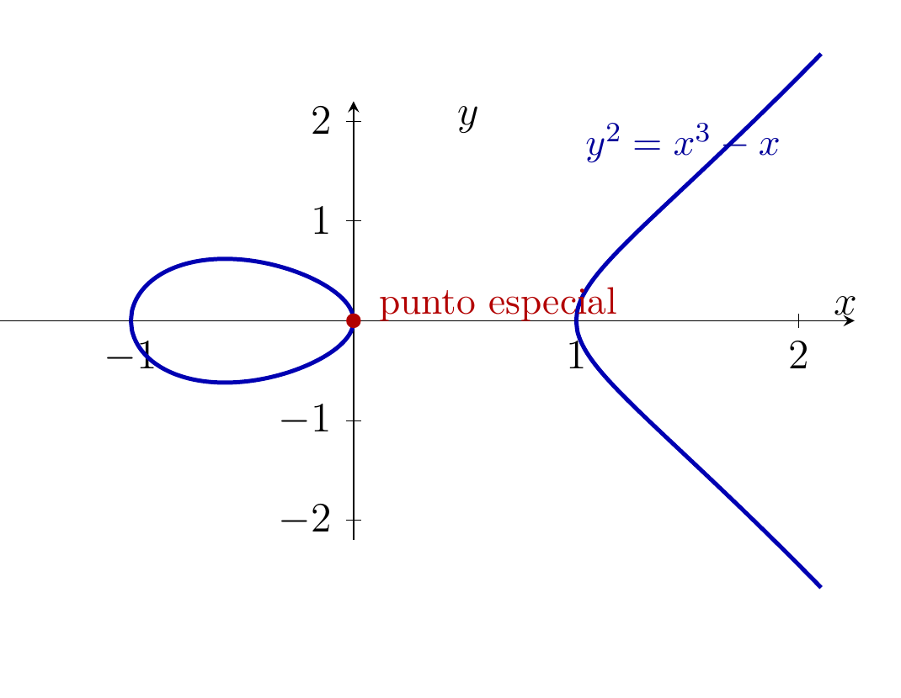
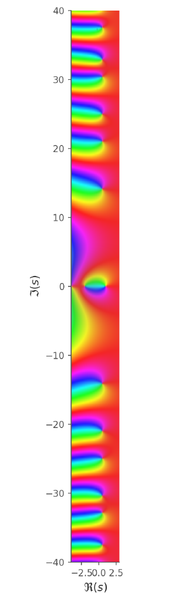
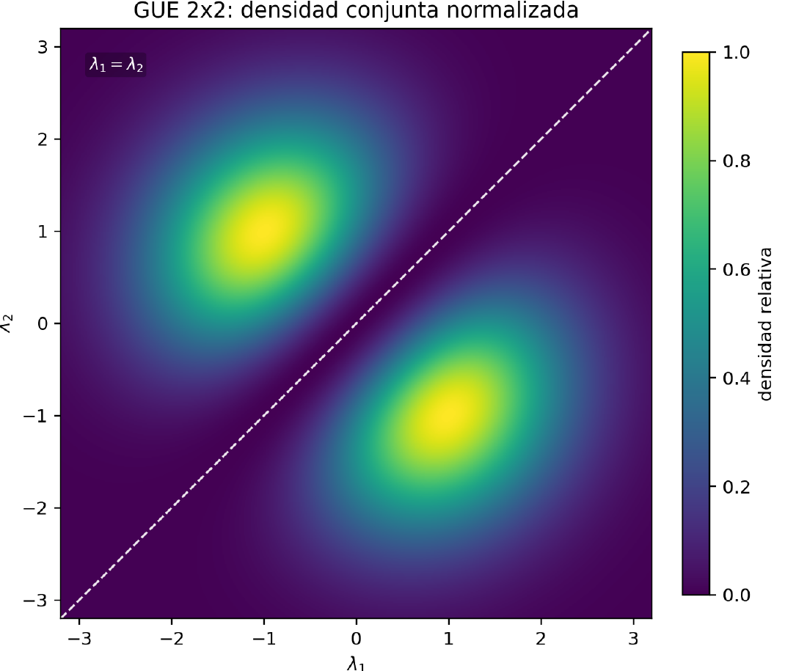
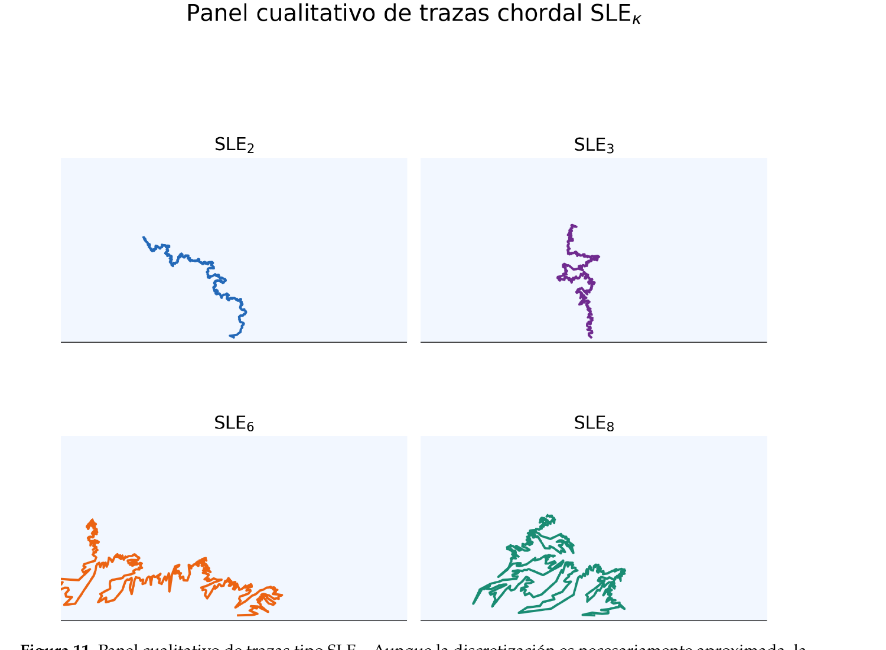
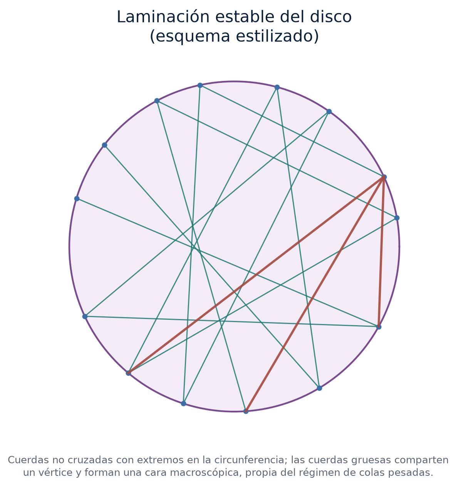
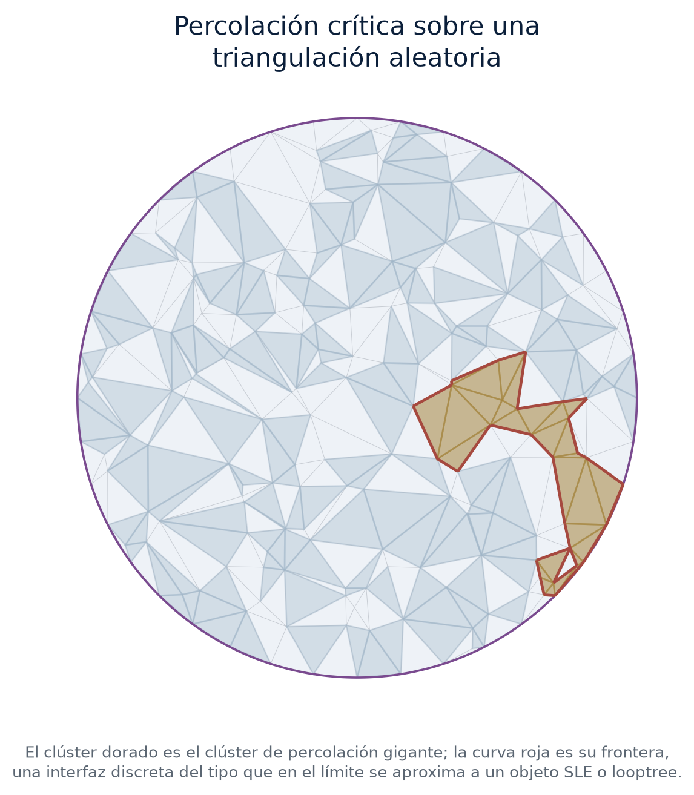
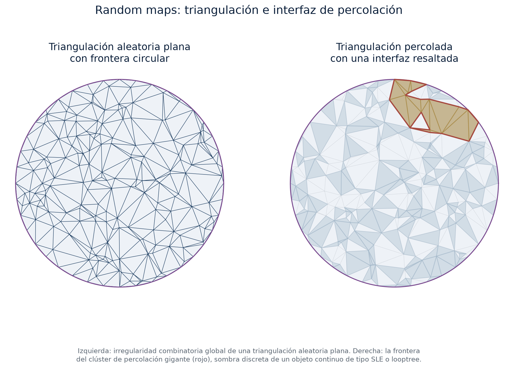
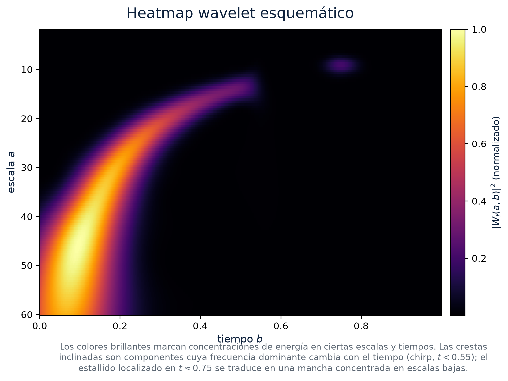

Teaching Portfolio
- Applied mathematics and quantitative reasoning
- Statistics and empirical analysis
- Probability and stochastic modeling
- Econometrics and forecasting
Research Professor working across pure mathematics—algebraic geometry, stable and motivic homotopy theory, topos and model theory—and quantitative research in econometrics and mathematical finance, with a commitment to academic excellence and evidence-based learning.
The center of gravity of this profile is doctoral-level research in pure mathematics. The doctoral dissertation, Sobre la convergencia de la sucesión espectral ortogonal (UNAM, 2022), and the resulting joint paper with Pablo Peláez establish strong convergence of the orthogonal spectral sequence in Voevodsky’s triangulated category of motives — work that has since been built on and cited by several papers in algebraic cycle theory. This sits inside a broader research program spanning algebraic geometry, stable and motivic homotopy theory, and topos–model theory (joint with Eduardo Duñez and José Iovino), with earlier graduate work in the Langlands program (master’s thesis on Drinfeld’s reciprocity law) and in random matrix theory and L-functions (undergraduate thesis).
Alongside this research core, the profile includes applied quantitative work in econometrics and mathematical finance, and a teaching practice in applied mathematics, statistics, and probability that supports the institutional mission of research-driven education.
Teachers and mentors: Alberto Verjovsky, Eduardo Dueñez, Timothy Gendron, Pablo Peláez Menaldo (Chebyshev Laboratory, St. Petersburg State University), Víctor Manuel Pérez–Abreu Carrión (CIMAT), Adrián Zenteno, José Iovino, Miguel Ángel García Álvarez, and Enrique Hernández–Lemus (Computational Systems Biology and Integrative Genomics Lab, Instituto Nacional de Medicina Genómica).
Scholarly discussions: a set of personal notes from Dustin Clausen (IHES), following up on discussions during his February 2026 IHES lecture series, on the interaction between algebraic K-theory and chromatic homotopy theory — stable ∞-categories and spectra, the redshift phenomenon (Rognes; Ausoni–Rognes) by which algebraic K-theory raises chromatic height, and the recent disproof of the telescope conjecture (Burklund–Hahn–Levy–Schlank) — together with two addenda, on shtukas and on condensed mathematics, written at my request.
Thesis direction
Thesis committee (sinodal)
Thesis reading (lectura de tesis)
Refereeing
Principal research program in pure mathematics, at the interaction of algebraic geometry and stable homotopy theory.
An ongoing program, joint with Pablo Peláez, develops the consequences of the Galindo–Peláez convergence theorem for Peláez’s birational-cover filtration on Chow groups: an explicit basis and dimension formula for the Griffiths group of a product of non-isogenous elliptic curves, isogeny invariance, a test on the Ceresa cycle, pullback/transfer/Gysin compatibility from a single naturality lemma, base change and Galois descent along finite extensions, an explicit curve where the filtration provably disagrees with the classical Bloch–Ogus coniveau filtration despite equal length, and comparisons with Voevodsky’s slice filtration and Bondarko’s weight structure.
Cited by
Talks
Joint program with Pablo Peláez (Senior Researcher, Chebyshev Laboratory, St. Petersburg State University) on the orthogonal spectral sequence: strong convergence in Voevodsky’s triangulated category of motives DM, applied to finite filtrations on Chow groups related to the Bloch–Beilinson–Murre conjecture.
A geometric theory T determines a classifying topos Set[T] that classifies its models: for any topos E, models of T in E correspond to geometric morphisms E → Set[T]. Kripke–Joyal semantics supplies the internal, sheaf-theoretic notion of forcing that makes this correspondence precise sheaf by sheaf, and the Diaconescu–Deligne–Barr circle of theorems characterizes which Grothendieck toposes arise this way and how their points and internal geometric logic determine them up to the relevant equivalence (joint with Eduardo Dueñez and José Iovino). A second, ongoing line with the same collaborators extends Birkhoff–von Neumann quantum logic — classically valued in the lattice of closed subspaces of a Hilbert space — to a Sòler–valued model theory, using Sòler’s theorem characterizing Hilbert spaces among orthomodular spaces to control which lattices admit a compatible model-theoretic semantics. A further, in-progress direction, joint with Eduardo Dueñez and José Iovino, asks how far this Sòler-valued semantics can be pushed computationally — toward idempotents, deep computations, and homological readings of orthomodular lattices, connecting to solenoids and to social choice.
Additional lines of research beyond the core pure‑mathematics program.
Advisor: Eduardo Dueñez, developing Dueñez’s framework of random matrix ensembles associated to compact symmetric spaces, with applications to the fine structure of Riemann zeta zeros and L-function statistics. Registered in the official thesis listing of the Mexican Network on Random Matrices, Non-Commutative Probability and Related Topics (CIMAT), and presented at its Interinstitutional Seminar on Random Matrices (SIMA), CIMAT, 2010–2011.
Gaussian Random Matrix Ensembles: Classical Theory and Universality, based on a course taught by Eduardo Dueñez at CIMAT
Cited by
Joint work with Marisol Velázquez–Salazar (Universidad Panamericana) and Robert H. Manson (Red de Ecología Funcional, INECOL) applying multivariate and bivariate econometric methods—principal component analysis, nonparametric tests, and spatial geolocation—to study coffee prices and market disruptions.
Joint work with Claudia Cristina Reyes Montes de Oca (Maestría en Economía, FES Acatlán, UNAM), asking whether stock prices behave as a random walk or carry memory and predictable structure, across nine equity indices (Mexico’s IPC, the Dow Jones, and further markets in Asia and Latin America) using only quantities computed directly from real daily price data — martingale/EMH diagnostics, Hurst exponents, Marchenko–Pastur random matrix theory, GJR-GARCH and extreme-value tail risk, a walk-forward machine-learning benchmark, and a continuous-time stochastic-calculus formalization (Itô, Heston, Girsanov).
Joint work with Martín Rodolfo García Barrera, using the statistical-mechanical machinery of large random matrices—the Coulomb-gas/eigenvalue-repulsion picture behind the Marčenko–Pastur law and the Baik–Ben Arous–Péché spiked-covariance transition, Tracy–Widom extreme-value statistics of the spectral edge, and the free-probabilistic deconvolution behind optimal nonlinear shrinkage—to separate signal from noise in a 38-asset, 14.5-year covariance matrix of the Mexican Stock Exchange (BMV).
Master’s thesis, La ley de reciprocidad de Drinfeld (advisor: Timothy Mooney Gendron Thornton, UNAM, 2016), published in Morfismos (Cinvestav) Vol. 20, No. 2, pp. 1–66. Presents Drinfeld’s proof of the Langlands correspondence for GL₂ over function fields via Drinfeld modules, rigid cohomology, and Eichler–Shimura theory. The extended notes reorganize Drinfeld’s original article into a continuous narrative, from formal O-modules to the cohomological comparison producing automorphic and Galois realizations on the same space.
Applied work in mathematical finance and actuarial risk, combining stochastic simulation, time-series forecasting, and machine learning for insurance and financial-risk applications, alongside teaching and research in portfolio theory and Monte Carlo methods (BUAP, Faculty of Physics and Mathematics).
Joint work with Santiago García Álvarez (Rector, Campus Ciudad de México) and Héctor Xavier Ramírez Pérez (Vicerrector, Campus Ciudad de México), Universidad Panamericana.
Joint work with Akito Kamei (Universidad Panamericana) examining how housing affordability and commuting burden shape urban welfare in Mexico City, using the spatial structure of mobility from INEGI’s 2017 Origin–Destination Survey to study transit-network optimization and ridership flows. The project builds the descriptive and spatial groundwork — mode choice, commuting burden, transit access, persistent‑homology analysis of the network’s most robust cycles — that a Rosen–Roback hedonic rent regression would need as inputs, under a formal spatial‑equilibrium definition of amenity capitalization into rents and wages.
Self-contained lecture notes developing wavelet theory from first principles, from L² Hilbert-space foundations through multiresolution analysis, the Daubechies and Cohen–Daubechies–Feauveau wavelet families, to nonlinear approximation theory and its applications.
An ongoing series of visually-driven mathematical expositions, each pairing a serious piece of mathematics with a generative, illustrated object.
“El grupo de Rubik: invariantes, orientación y la obstrucción de índice 12” (2026)
“A Cronenberg Creature: Geometric Deformation, Scalar Fields, and Generative Body-Horror” (2026)
Exposición del curso de Lógica 3, in memory of Gonzalo Zubieta Russi. Reorganizes the “serpent’s egg” metaphor through René Thom’s catastrophe theory: not merely a moral omen, but a morphogenesis—a latent form stabilizing under control parameters, approaching a discriminant, and hatching as a regime shift.
Joint work with Óscar Amador on data-driven spectral reflectance reconstruction from RGB cameras augmented with a small number of LED channels — an ill-posed inverse problem made tractable, and its LED wavelengths chosen, by design rather than by trial and error. The framework poses channel selection as a D-optimal experimental design problem: maximizing the determinant of the Fisher information matrix induced by a PCA-learned latent basis for the reflectance spectrum, with sensing-quality diagnostics (condition number, log-determinant) independent of the estimator or test sample, and a closed-form Bayesian posterior for the reconstruction itself.
Algebraic geometry, homotopy theory, motivic homotopy theory, and probability — objects at the center of the research program, including visualizations from Galería para Aura y Luka.
 Clebsch Cubic Surface
Algebraic Geometry · Wikimedia Commons
Clebsch Cubic Surface
Algebraic Geometry · Wikimedia Commons

Elliptic Curve Algebraic Geometry · Original illustration, Mila y las olas Torus
Homotopy Theory · Wikimedia Commons
Torus
Homotopy Theory · Wikimedia Commons
 Möbius Strip
Homotopy Theory · Wikimedia Commons
Möbius Strip
Homotopy Theory · Wikimedia Commons
 2-Sphere
Homotopy Theory · Wikimedia Commons
2-Sphere
Homotopy Theory · Wikimedia Commons
 Riemann Sphere (ℙ¹)
Motivic Homotopy Theory · Wikimedia Commons
Riemann Sphere (ℙ¹)
Motivic Homotopy Theory · Wikimedia Commons

Riemann Zeta Function ζ(s) Analytic Number Theory · Original illustration, Galería para Aura y Luka
GUE Eigenvalue Repulsion Random Matrix Theory · Original illustration, Galería para Aura y Luka
Chordal SLEₖ Traces Conformal Probability · Original illustration, Galería para Aura y Luka
Stable Lamination of the Disk Random Geometry · Original illustration, Galería para Aura y Luka
Critical Percolation Interface Random Geometry · Original illustration, Galería para Aura y Luka
Random Maps Panel Random Geometry · Original illustration, Galería para Aura y Luka
Wavelet Heatmap Time–Frequency Analysis · Original illustration, Galería para Aura y LukaUpdated academic dossier for institutional review, professional reference, and research documentation.
Ongoing study of Russian, in collaboration with Ekaterina Larina, including a self-built interactive Streamlit application for vocabulary and grammar practice.